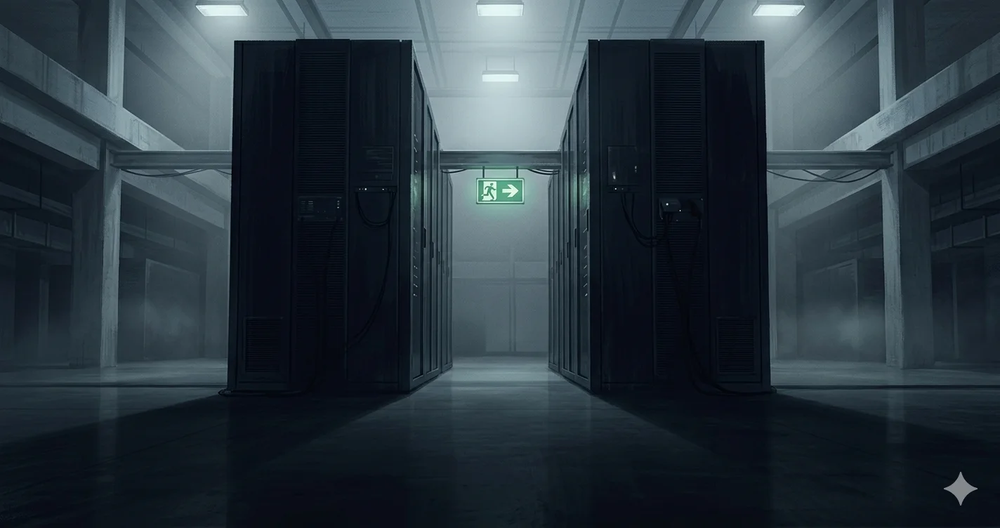
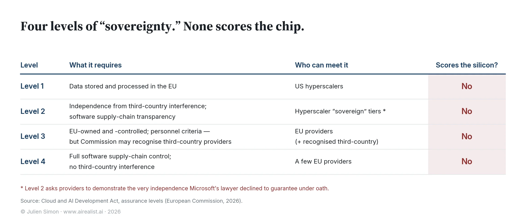

In October 2025, a single fault in one Amazon data center in northern Virginia took down Signal, Snapchat, Epic Games, and much of the internet for most of a day.[1] There was a second hyperscale outage that week: an Azure Front Door failure that hit Heathrow and the Scottish Parliament. Seven months later, these outages have produced a piece of European law.
In the week of 22 June 2026, the European Commission is expected to find, provisionally, that Amazon Web Services and Microsoft Azure are “gatekeepers” under the Digital Markets Act, a designation no cloud provider has carried before.[2] A gatekeeper is a platform so entrenched that its customers cannot practically avoid it, and the designation imposes on it obligations the rest of the market does not bear. The remedies here aim to improve interoperability, ensure cleaner data portability, and reduce exit fees.[3]
Europe’s newest answer to its dependence on American cloud is a rule that makes it easier to switch between two American clouds.
Read the room before you read the regulation. The outage was an accident, and the cure is written for accidents. The thing that makes the cloud a question of sovereignty rather than reliability is not the accident. It is the day someone reaches for the off switch on purpose, and that switch is not on the menu.
Two laws, one month
The designation does not arrive alone. On 3 June, the Commission published the Cloud and AI Development Act, the centerpiece of its Tech Sovereignty Package and the most serious attempt yet to legislate European independence in cloud and AI.[4] Two instruments, weeks apart, aimed at the same dependence. One is a competition tool. The other calls itself sovereignty. Neither touches the two things that decide whether a cloud is sovereign: who operates the service, and who controls the chips it runs on.
The competition tool runs into a wall of arithmetic. Three American firms, Amazon, Microsoft, and Google, hold 70 percent of the European cloud market; the largest single European provider, whether SAP or Deutsche Telekom, holds 2 percent.[5] Against that backdrop, “easier to switch providers” means something specific and unhelpful: easier to switch from Amazon to Microsoft, and vice versa.
Portability between two firms under the same foreign jurisdiction is not an exit. It is a more comfortable form of dependence.
None of this makes the remedy worthless. The Digital Markets Act will lower egress bills and make multi-cloud architectures less painful, and contestability is a real good, whether or not it touches sovereignty. The point is narrower: a competition instrument is being read, in the political register, as a sovereignty win. It is not built to be one, and it cannot accidentally become one. Where the designation cannot reach, and where the sovereignty law chooses not to look, is the rest of this piece.
The off switch reaches the mundane
Where the off switch sits is settled, and I will not re-litigate it here. The law follows the company, not the server: a provider under United States jurisdiction can be ordered to produce data in its possession, custody, or control wherever that data physically sits. I traced that statutory chain in full inTwo Sovereign Clouds, One Legal Wall.
What is new is the evidence that the switch reaches past the obvious targets. On 22 May 2026, the Dutch outlet Vrij Nederland reported that Microsoft had handed the US House Judiciary Committee the internal emails, meeting notes, and calendar entries of named officials at two Dutch regulators, the competition authority and the data protection authority, without redacting their names.[6]
No sanctions, no court order against the individuals, no Russia nexus.
Ordinary European civil servants, doing ordinary European regulatory work, have their correspondence produced to a foreign legislature because the company holding it answers to that legislature’s law. called it "extremely worrying" and raised it with the US ambassador.[7]
That matters because, until now, the switch had mostly been thrown against the conspicuous: anICC prosecutor under US sanctions and a Rosneft-linked refiner under EU sanctions, once under American law, once under European, the customer’s own location irrelevant in both. The objection writes itself: those were sanctioned parties. But the Dutch case is different. The exposure is not a property of being sanctioned. It is a property of whose jurisdiction your operator holds, and the Digital Markets Act’s portability remedy does nothing to change that, because it moves you between two operators who answer to the same one.
The sovereignty law that de-chipped itself
Set the competition remedy aside and read the Commission's proposed Cloud and AI Development Act on its own terms. It is the most serious sovereignty framework Europe has produced, and its seriousness is the problem. The Act defines four assurance levels, weakest to strongest.[8] Level 1 is data residency. Level 2 adds independence from third-country interference and transparency in the software supply chain. Level 3 requires the provider to be owned and controlled from within the EU, with criteria that extend to personnel's nationality. Level 4 demands full command of the software supply chain.
Read as a ladder, it climbs towards independence. Read against the market, each rung lands on a segment that already exists.
The Commission’s own impact assessment aligns the levels with current supply and is candid that most public-sector workloads will sit at Levels 1 and 2, which the American hyperscalers reach through their “sovereign” offerings.[9] Only a narrow band will require Levels 3 and 4. There is a sharper irony one rung up: Level 2 asks a provider to demonstrate independence from third-country interference. A US hyperscaler “sovereign” tier claiming Level 2 is certifying, on paper, an independence its own counsel told a parliament it does not have.[10] And Level 3, the rung that is supposed to signify European ownership, contains a clause that allows the Commission to recognize third-country providers.[11] The most European tier has a door in its back wall.

Then there is the part the proposal leaves out. The Commission already had a sovereignty yardstick that required a full EU supply chain, including chips.[12] When it put €180 million of its own sensitive workloads out totender in April, no bidder reached that tier; the cleanest qualifiers cleared the rung below it, on a commodity stack.[13] Yet when the legislative text arrived in June, CADA did not carry the chip across. Its assurance levels grade the software supply chain and stop there; Annex II places hardware "outside of the scope" of the sovereignty assessment.[14]
Call it what it is: de-chipping.
The yardstick that scored the chip was one that the Commission could publish alone; the proposed law dropped the one rung nobody could meet. A sovereignty framework that cannot describe a sovereign chip has decided not to try. The money agrees with the edit. The Act’s financial statement carries roughly €25 million across 2028 to 2034, against a build-out it says needs three to four billion euros per gigawatt and tens of gigawatts of new capacity.[15] That is not a budget. It is a signature.
The switch nobody scores
The de-chipping matters because the hardware is where the off switch is most absolute, and it is the layer that assurance levels now refuse to look at. Not one of the four scores the silicon. A workload can sit at Level 4 and run end to end on Intel processors and Nvidia accelerators; the software supply chain can be wholly European while the chips answer to Washington. I have written separately about how far that dependence runsbelow the silicon; the point here is only that CADA’s own top tier now stops precisely where that dependence begins.
It is not hypothetical. In January 2025, the outgoing US administration’s AI Diffusion Rule sorted the world into tiers for access to advanced AI chips and placed much of the EU, including Poland, Portugal, and most of the bloc’s east, in the second tier with capped access; the rule was rescinded that May, two days before it took effect, in a decision as unilateral as its drafting.[16] Congress, meanwhile, is advancing the Chip Security Act, which would require location verification for exported AI chips. It cleared the House Foreign Affairs Committee unanimously in March 2026, and while it is not law, the fact that chip-tracking is on the table in Washington tells you where hardware sovereignty is decided.[17]
A “sovereign” European cloud whose chips can be tiered, traced, or capped by a foreign legislature is sovereign in the way a house with someone else’s lock on the door is private.
What honesty would look like
None of this means the pragmatism is wrong. Given the state of European supply, no law could wall the public sector off from American providers without being unenforceable on contact, and removing a sovereign-chip tier that nobody can meet is more honest than pretending otherwise. A version of the Act that said plainly, strict sovereignty over a critical core and pragmatism on the rest, would be defensible. The Commission’s own Cloud III procurement showed in April that a real requirement pulls a real response, when two clean European providers, Scaleway and STACKIT, qualified for sensitive workloads on a commodity stack.[18]
The problem is not the pragmatism. It is the packaging. A competition remedy that makes the American duopoly easier to move within is being sold as a step towards sovereignty. A sovereignty law whose own grades never reach the chip is being sold as the thing that will end the dependence. Present either as what it is, and both are defensible; present them together as a sovereignty agenda, and you install the ambiguity in which sovereignty-washing lives, a term the European Parliament’s own research service now uses in print.[19] Call the hyperscalers’ improved offerings what they are: trusted cloud, resilient cloud, real operational progress. Sovereign, no.[20]
Presenting the package on 3 June, the Commissioner responsible, Henna Virkkunen, said the aim was to ensure no provider of critical services holds a "kill switch" over Europe.[21]
She named the risk precisely, then presented a law that reaches neither the operator nor the chip, the two places the switch sits.
The EU's record on targets like this is not encouraging: the 2023 Chips Act aimed to double Europe's share of global semiconductor production to 20 percent by 2030, attracted more than €52 billion, and left the bloc below 10 percent.[22] The number of cloud laws built to move is the same kind; the share of the European cloud market held by European providers is stuck near 15 percent, while three American firms hold 70 percent.
If it has not turned by 2030, Europe will have regulated its dependence twice, relabelled it once, and changed it not at all, and the off switch will sit where it sits today, in the one place no assurance level dares to score.
Notes
[1] On 20 October 2025, a DNS race condition in Amazon Web Services’ US-EAST-1 region (northern Virginia) cascaded across dependent services for roughly fifteen hours, affecting Signal, Snapchat, Epic Games and more than a thousand others; AWS published its post-mortem three days later. The outage was the proximate trigger for the EU’s cloud market investigation.ThousandEyes outage analysis, 20 October 2025.
[2] The Commission is reported to be preparing preliminary findings, expected the week of 22 June 2026, that AWS and Microsoft Azure meet the requirements for gatekeeper designation under the Digital Markets Act, with a final decision expected by end-2026.The Next Web, citing Bloomberg.
[3] Reported obligations under discussion include interoperability, data portability and curbs on customer lock-in such as egress fees.The Next Web.
[4] Cloud and AI Development Act, European Commission, published 3 June 2026 as the centrepiece of the European Technological Sovereignty Package.European Commission;Covington, Inside Global Tech, 11 June 2026.
[5] Synergy Research Group: Amazon, Microsoft and Google together hold about 70 per cent of the European cloud infrastructure services market (IaaS, PaaS, hosted private cloud); among European providers, SAP and Deutsche Telekom lead with roughly 2 per cent each (2024 data).Synergy Research Group.
[6] Vrij Nederland, 22 May 2026, reporting that Microsoft transmitted unredacted internal emails, meeting minutes and calendar entries of named civil servants at the Authority for Consumers and Markets (ACM) and the Data Protection Authority (AP) to the US House Judiciary Committee.NL Times.
[7] The named officials include staff at both regulators and a University of Amsterdam researcher; the Dutch cabinet called the episode “extremely worrying,” noting the named individuals could face travel bans or sanctions, and State Secretary for Digital Economy and Sovereignty Willemijn Aerdts raised the matter with US Ambassador Joe Popolo during her introductory meeting with him.Built In EU;DutchNews.nl.
[8] CADA defines four “Union assurance levels” for public-sector cloud and AI procurement. Level 1 (data residency) is the floor for all providers serving the public sector; Levels 2–4 add an independent third-party audit examining EU-located staff, whether provider data is used to train AI models, software supply-chain security, and a European cybersecurity certificate rated at least “substantial.” “Control” is defined by reference to the European Defence Fund “decisive influence” test (Art. 2(21)).European Commission;Wilson Sonsini, June 2026.
[9] CADA impact assessment, Part 1, p. 41, maps each level onto an existing market segment in near-verbatim terms (Level 1: “US hyperscalers generally all have offerings that would allow them to qualify”; Level 4: “some emerging EU offerings”). The assessment twice instructs that risk assessments “consider the reality of the supply market to avoid… mandating the use of services that don’t exist (yet)” (pp. 40, 49). Its demand model splits public-sector use cases 70/20/9/1 across Levels 1–4 and sizes the exclusively EU-addressable market at roughly €4.48 billion by 2030 (pp. 47, 72–73).
[10] CADA, Level 2 criterion requiring providers to demonstrate independence from third-country interference (Art. 2(g)(ii)). The Commission’s own impact assessment (Part 1, pp. 14–15) recounts the Microsoft France testimony before the French Senate procurement inquiry, June 2025: “Non, je ne peux pas le garantir, mais, encore une fois, cela ne s’est encore jamais produit.”Sénat, compte rendu.
[11] CADA, Level 3 requires the provider to be owned and controlled from within the EU, with criteria such as personnel citizenship; the Commission’s own summary states it “can recognise third-country providers” under the framework.European Commission; see alsotechUK, June 2026, which calls the third-country recognition mechanism “one of the most important aspects” of the legislation.
[12] The Commission’s Cloud Sovereignty Framework (Version 1.2.1, published 20 October 2025) defines a five-rung scale of Sovereignty Effectiveness Assurance Levels (SEAL), from SEAL-0 (no sovereignty) to SEAL-4 (Full Digital Sovereignty: complete EU control across the supply chain, hardware included). CADA codifies a four-level version of this framework as binding “assurance levels,” and, as Annex II makes explicit, drops hardware from scope in the process.European Commission, Cloud Sovereignty Framework v1.2.1; analysis inMore Sovereign, Different Stack: The Builder Tax.
[13] European Commission, Cloud III procurement, awarded 17 April 2026: a Dynamic Purchasing System worth up to €180 million over six years for sensitive EU institutional workloads. SEAL-2 was the minimum threshold; the cleanest prequalified consortia, Scaleway and STACKIT, cleared SEAL-3 on commodity-stack architectures, and none reached SEAL-4.European Commission; seeTen Percent SovereignandThe Builder Tax.
[14] CADA, Annex II, scope paragraph, excludes hardware verbatim: “’Hardware’ within the meaning of Regulation (EU) 2024/2847, Article 3, point (5) is outside of the scope.” Hardware survives only as a contract-award criterion that is “ancillary and not decisive” (Art. 32(2)(d)), feasibility-qualified, and capped by Recital 67 at a suggested maximum of 15 of 120 points.European Commission;Covington, Inside Global Tech, 11 June 2026(confirming the 15-of-120 weighting).
[15] CADA legislative financial statement: total appropriations of €25.228 million across 2028–2034, fee-financed, supporting roughly 25 full-time staff. The impact assessment’s central scenario calls for a tripling of EU data-centre capacity against an estimated 19 GW gap, at a build-out cost of roughly €3–4 billion per gigawatt.European Commission.
[16] The AI Diffusion Rule (interim final rule, 15 January 2025) established a tiered framework for access to advanced AI chips, placing NATO members including Poland and Portugal in the second tier with capped access; BIS rescinded it on 13 May 2025, two days before its scheduled 15 May effective date.United States Studies Centre;U.S. Department of Commerce, BIS.
[17] The Chip Security Act (H.R. 3447) passed the House Foreign Affairs Committee 42–0 on 26 March 2026 and proceeds to the full House; it has not been enacted. Nvidia opposes a tracking mandate, stating its products contain “no backdoors” and “no kill switches,” while since December 2025 offering optional software to trace its GPUs’ location.House Foreign Affairs Committee;Geo News, citing Reuters.
[18] Commission Cloud III procurement, awarded 17 April 2026: under a genuine sovereignty requirement, the cleanest prequalified consortia, Scaleway and STACKIT, cleared SEAL-3 (one tier below the unmet SEAL-4).European Commission; seeThe Builder Tax.
[19] The term “sovereignty-washing” appears in the European Parliament’s research output describing hyperscaler “sovereign cloud” offerings.European Parliament, “European Software and Cyber Dependencies,” PE 780.413/778576, December 2025.
[20] Disclosure: the author is an AI Operating Partner at Fortino Capital, a European private equity firm whose portfolio includes companies whose cloud architecture decisions fall within the scope of this analysis; he previously spent six years at AWS and was Chief Evangelist at Hugging Face. The disclosure names the interest; it is not an endorsement of any provider or procurement choice.
[21] Henna Virkkunen, Executive Vice-President for Tech Sovereignty, Security and Democracy, at the press conference presenting the European Technological Sovereignty Package, Brussels, 3 June 2026: the Commission wants to ensure no cloud provider of critical workloads holds a “kill switch” over essential European services, and observed that the US CLOUD Act makes it “difficult” for US companies to reach the highest sovereignty levels.CNBC, 3 June 2026.
[22] The 2023 EU Chips Act mobilised more than €52 billion toward a target of doubling the EU’s share of global semiconductor production to 20 per cent by 2030; the EU’s share remains below 10 per cent, prompting the demand-focused Chips Act 2.0 in the June 2026 package.TechPolicy.Press, June 2026.